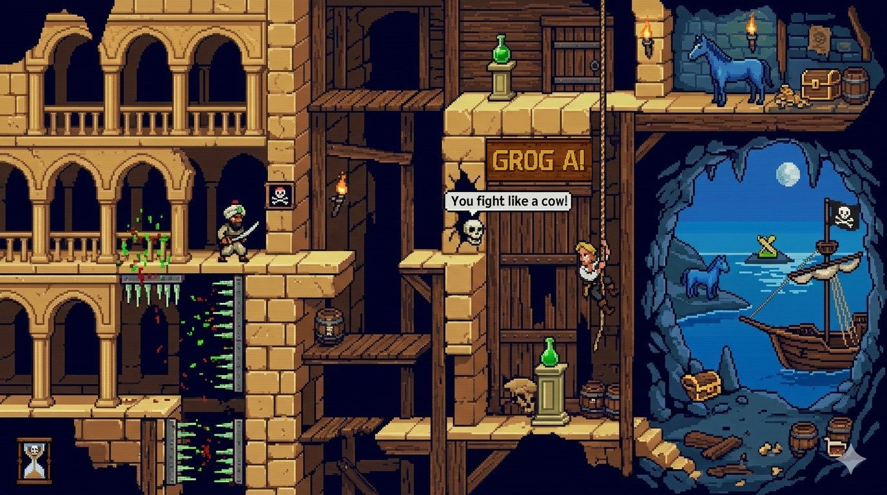
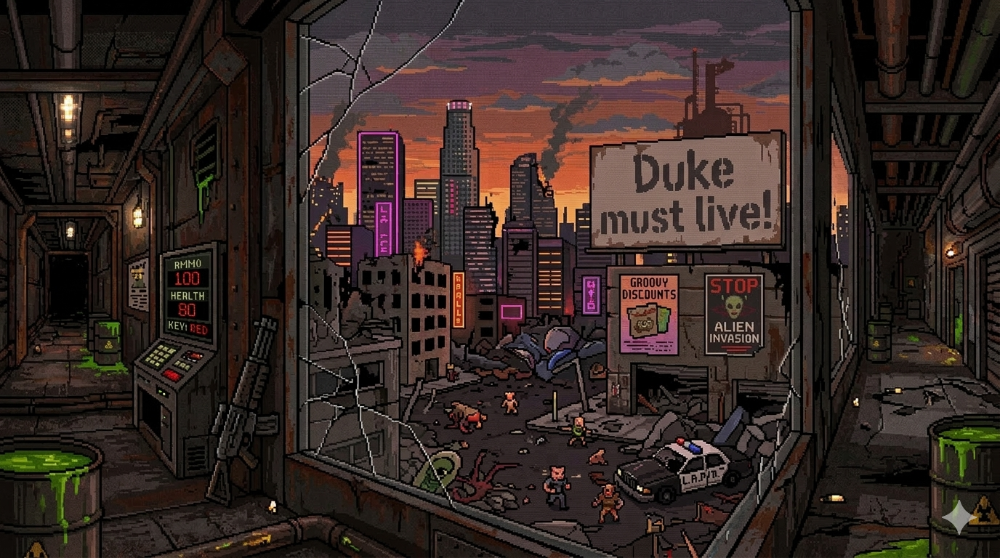

⏺ Leading complex digital services & processes
My name is Francesco Nicolosi — an IT Service Manager & Project Manager with over 10 years of experience across the luxury and e‑commerce landscape (Gucci, Luxottica, Tod’s). I specialize in connecting business goals with technical delivery, ensuring operational excellence , SLA compliance and high‑reliability services.
With a background in software engineering , I lead cross‑functional teams and manage complex digital ecosystems with clarity and structure.
My current focus is the adoption of AI‑powered capabilities to modernize Service Management — enabling intelligent automation , predictive incident detection , and self‑healing workflows that elevate service quality and reduce operational friction.
A bit of history
At the age of eight, I discovered my passion for computer science while experimenting on my first ancestral Pentium PC — a moment that quietly defined the trajectory of my future. From that early fascination grew a clear intention: one day technology would become my profession. That vision became reality in 2007, in concomitance with the achievement of my computer science degree, when at 22 years old I began my career as a Network Assistant in an international airport in Italy, transforming childhood curiosity into a fully fledged professional path.
Today’s challenges have grown in scale and responsibility in ways that would have been unimaginable in the early days. Yet every step of my professional journey has shaped a mindset capable of facing any situation — even the most urgent ones — with rationality, structured troubleshooting, and a deep sense of technical logic. What began as curiosity has become a disciplined approach to problem‑solving: steady, analytical, and resilient under pressure.
At the age of eight, I discovered my passion for computer science while experimenting on my first ancestral Pentium PC — a moment that quietly defined the trajectory of my future. From that early fascination grew a clear intention: one day technology would become my profession. That vision became reality in 2007, in concomitance with the achievement of my computer science degree, when at 22 years old I began my career as a Network Assistant in an international airport in Italy, transforming childhood curiosity into a fully fledged professional path.
Today’s challenges have grown in scale and responsibility in ways that would have been unimaginable in the early days. Yet every step of my professional journey has shaped a mindset capable of facing any situation — even the most urgent ones — with rationality, structured troubleshooting, and a deep sense of technical logic. What began as curiosity has become a disciplined approach to problem‑solving: steady, analytical, and resilient under pressure.


Sezione unica con alternanza “Monkey ⇄ Doom” e transizione pixellosa.
The previously selected interface “Built‑in Output”
will be used instead for this session.
Gestione flussi enterprise.
A fatal exception 0E has occurred...
Status: Service Manager still running.